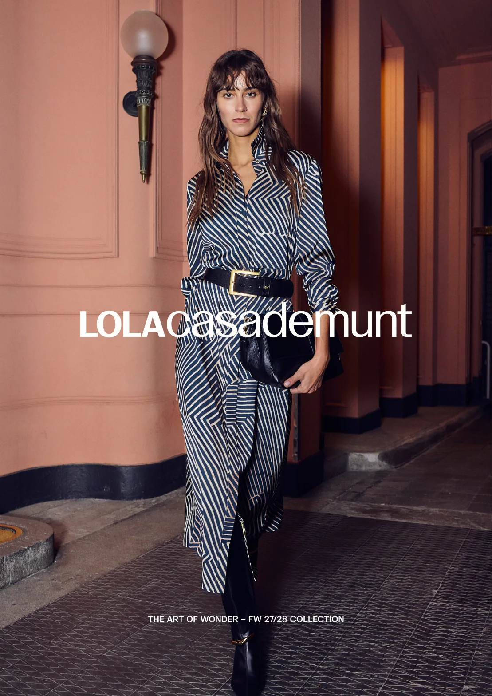
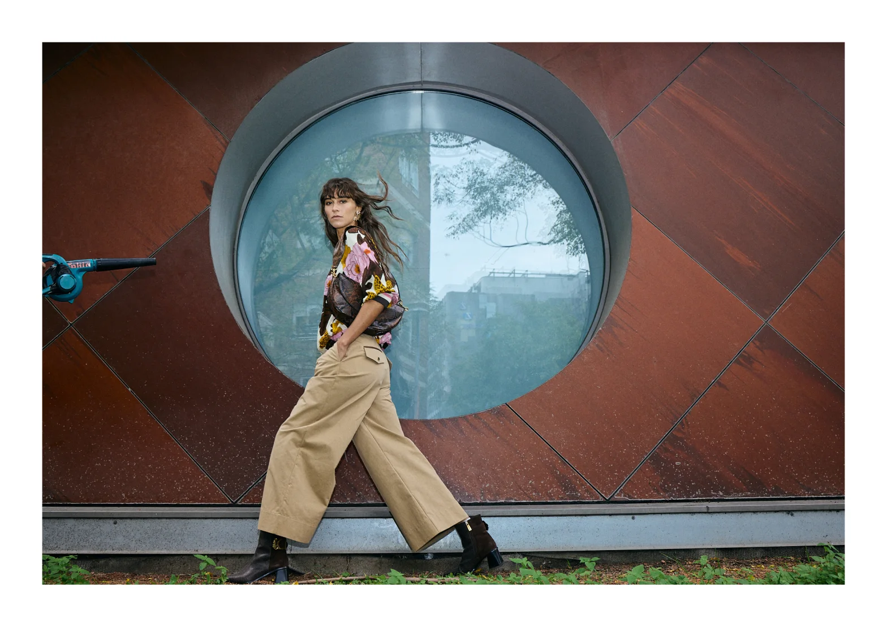
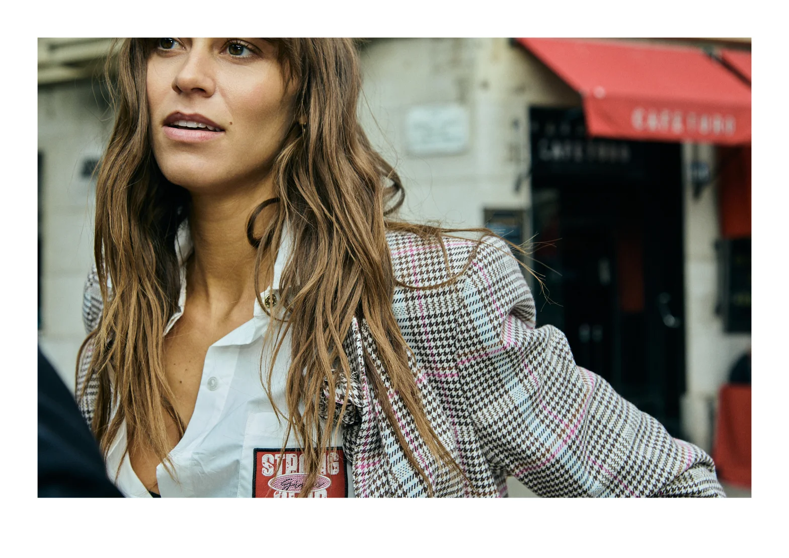
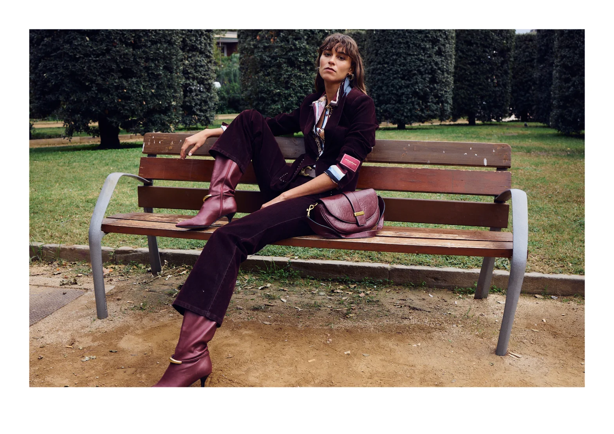
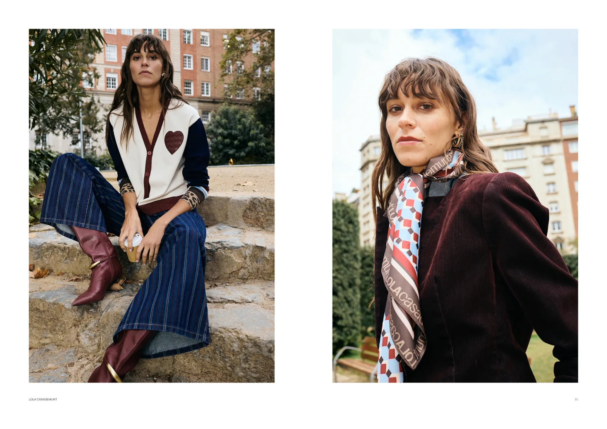
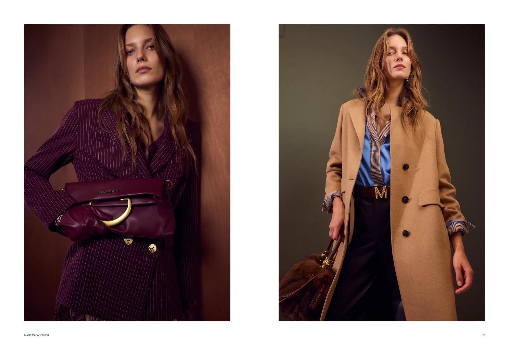
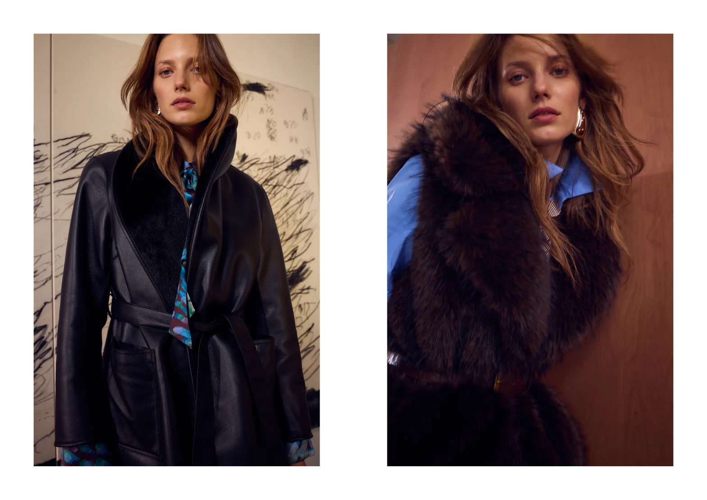

Mirar más allá.
Encontrar inspiración en cada detalle.
Celebrar todas las formas de ser.
Porque el asombro no se busca: se aprende a ver.The Art of Wonder


El asombro no está en lo que vemos.
Está en cómo decidimos mirarlo.
Mirar dos veces ya es crear.


Un gesto. Una pausa.
Lo pequeño guarda lo extraordinario.
Basta con detenerse.



Lo heredado aprende a jugar.
Las reglas, para saber romperlas.
La imaginación no pide permiso.




Ser una y ser muchas.
Cambiar de ritmo sin perder la voz.
Todas, a la vez.


Texto provisional, primer verso.
Texto provisional, segundo verso.
Texto provisional, tercer verso.Accesorios


Una casa sin paredes.
Cada habitación, un sueño distinto.
Aquí no se viaja: se imagina.
Vestirse es soñar despierta.Maison des Rêves



Afuera, el mundo se detiene.
Dentro, el tiempo es nuestro.
Cerrar los ojos y quedarse.



Abrir las ventanas al sueño.
Dejar que la noche dure un poco más.
Despertar sin dejar de soñar.


Texto provisional, primer verso.
Texto provisional, segundo verso.
Texto provisional, tercer verso.Accesorios